以前住在圓山站附近偶爾會去花博慢跑，有時穿梭其中，有時繞著外圍，覺得距離累積太慢就會穿越馬路，從圓山園區跨到美術園區，不同形式的建築物，不同活動的區塊，為運動增添不少變化，一段一公里、一公里，里程就這麼累加起來。

旁邊的北美館不時有特別的展覽，一年一度的X-site、國際大師的作品，走進這區塊，一兩個小時，甚至半天會輕易地消失，搭上遠方的山景，還能加碼走上劍潭山，對我而言在城市中健走非此區域莫屬。於是拿到阿瘦的萬步健康鞋後就朝這前進了！

認識阿瘦皮鞋
在實際體驗之前先來看看阿瘦皮鞋這牌子與這系列的鞋款。我的印象中阿瘦是個媽媽、阿姨會買的鞋，主要產品為皮鞋跟涼鞋，材質不錯深得長輩的心，平常採買運動鞋為主的我只會從媽媽手上得到，這一次自己走進店裡才發現原來阿瘦有使用工研院的技術，結合物理治療師的評估設計，走在前端的動態足壓量測，先瞭解自己的步態再來選擇方案，有著科學化的流程。
／動態足壓量測
要做檢測建議先預約，若是碰上店裡的空檔也是可以直接做的。首先是害羞的三圍量測，不過只有腳被看光光，記錄下長寬值後穿上擁有幾十萬個（腦容量低已忘記確切數量）感測器的鞋，基本的站立、踏步及走動就完成檢測。很簡單的步驟就得到看起來酷炫的報表，門市人員會詳細又專業的解說結果並推薦適合的款式。
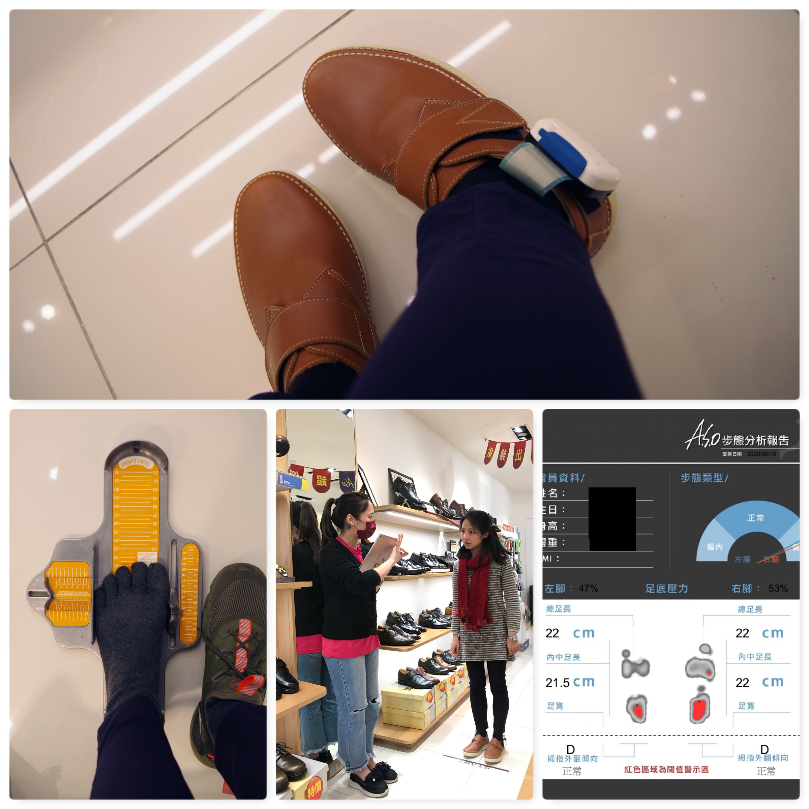以我而言檢測後得到四個關鍵字3D、3A、厚、勁，簡單的說萬步健康鞋的氣墊設計蠻適合我，不用想太多。不過在現場也體驗了超正步鞋墊，有比一般高一點的足弓，可以動態貼上墊片，以應付隨時間改變的步態，由於我的腳掌中間沒什麼受力，會在前後貼上藍色的避震墊片以分散壓力。
想要矯正姿態的人很適合來做個檢測，用外在的輔助來慢慢改變，也可以保護常用的腳，對理工腦的我來說是蠻有趣又覺得很有幫助的過程。
偷偷說一下，檢測還有一個小好康，意外得到雙健康襪。這次跟著萬步健康鞋一起測試的還有負離子機能排汗衣，這才發現阿瘦有個配件織品區，不只是鞋，包包、傘、衣著等等玲瑯滿目，以機能性產品為主，果然是講求品質選購者的愛，其實光萬步健康鞋就有好幾種款式，真的很多元化。
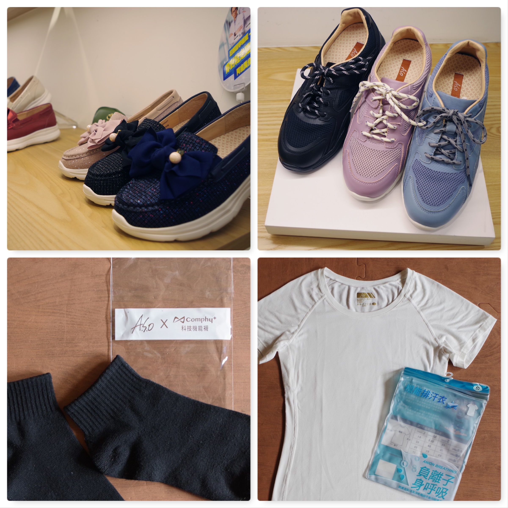行程分享
就這樣，穿上排汗衣，套上萬步健康鞋，帶你走玩花博及美術館！
花博圓山園區緊鄰捷運圓山站，在門口就可以看到棚架式的廣場，幾乎每個周末都有農民市集，各式蔬果、農產品，蜂蜜、咖啡、香腸等等應有盡有，有時候還會依照不同主題有擺攤活動，更是許多公司家庭日的絕佳地點選擇。
門口有棵大樹，環繞的坐椅常見休憩的人們。
園區的左手邊是大片的草地與穿梭其間的步道，在花博期間是主要的花田區域，現在適合居家遛寵物類型的活動，可四處閒晃也可隨時坐躺下來看飛機飛過，感受一下戶外的熱鬧氣息。
轉進MAJI廣場首先映入眼簾的是一排的小吃及有點質感的賣店們，往後深入走是文青攤販區，這時可以右轉進爭豔館看看。

爭豔館有看台式的設計，很多花瓣型的圖象裝飾，諾大的空間有的是固定場所，像是親子館、輔具中心等，以前也會跑去裡面使用健身器材，對附近的居民來說是很好的活動選擇，旁邊連通的空間則提供不少大型展覽的場地，文博會通常會在這邊有一區，這次到訪是台北結婚購物節的活動。
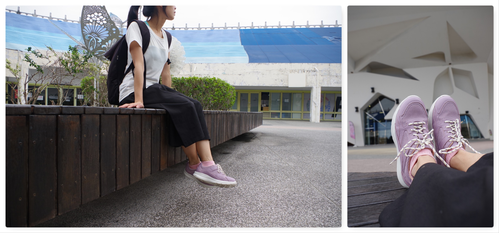文青路走到底有很多特色餐廳及一個小小的表演舞台，在這區有酒館、韓式、印度、地中海、阿根廷等不同風味的餐廳，想要在地的台式餐飲也有，舞台晚上或假日會有歌唱或樂器的表演。
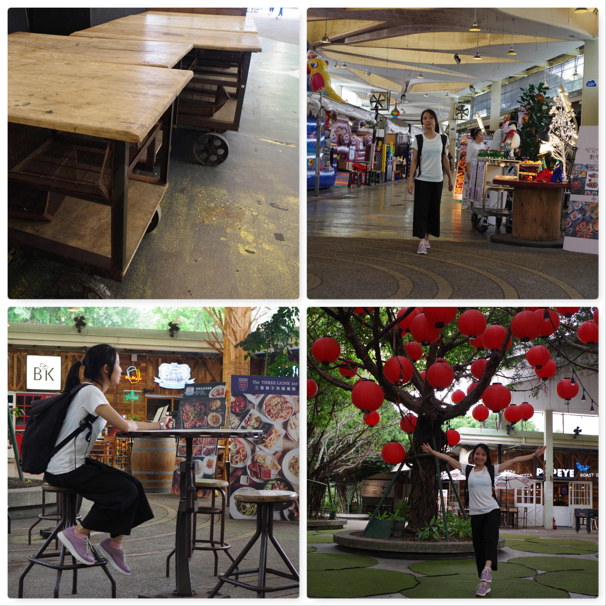圓山園區盡頭的遠東環生方舟是用回收材質的寶特瓶搭建而成，建築本身就是一大賣點，花博時甚至推出同樣造型的水瓶增加買氣，設計者黃謙智老師仍專注於各項材質的研發，強調環保永續。迎合設計主題，保存下來的流行館舉行過幾次水資源特展，讓精神不斷傳承教育。
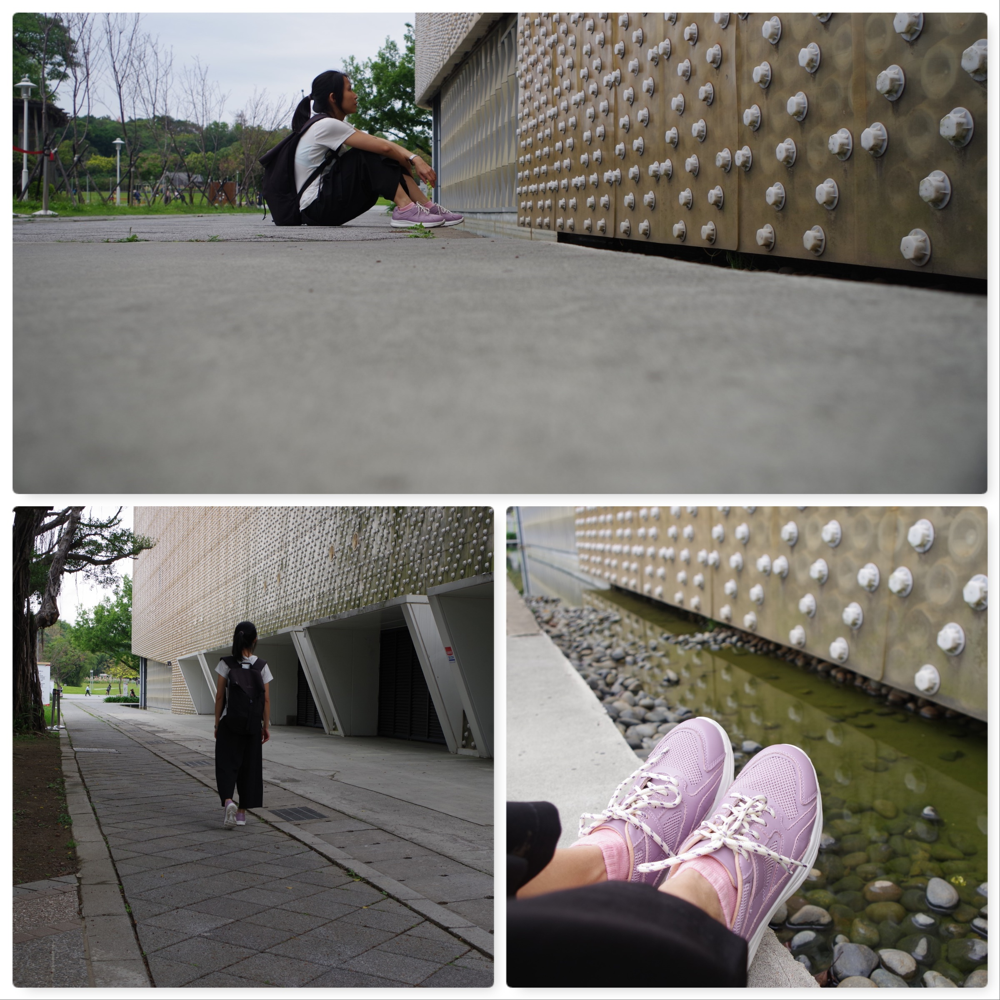穿過馬路就是美術園區，草地不要隨便進入，會黏上大量的鬼針草，過來人經驗分享。
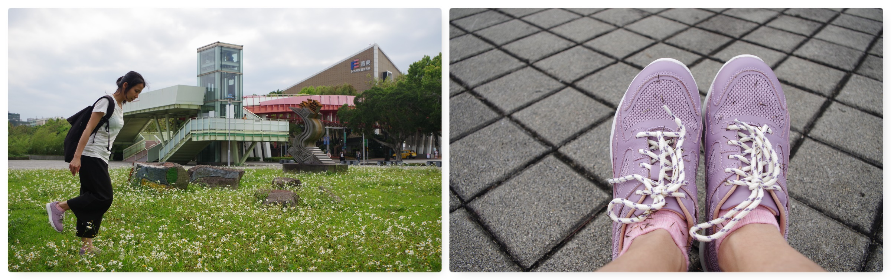走過帶針的草地來到原民風味館，館場外有個隔水的舞台周末有機會能遇到原民表演，平常日則安靜很多，倒是看到外面的大熊很想跟牠來個擊掌，一靠近才發現身高差異有點大。

另一個主要的建築物是造型特殊的舞蝶館。這一個半開放的演出空間在花博結束後很少看到它被使用，但維護的也算良好，特殊的結構造型，有點低調的量體，吸引不少人前往拍照。
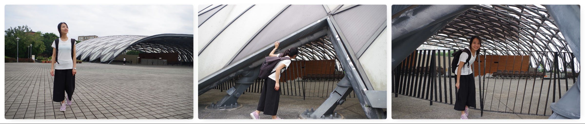爭豔館旁邊的公園有新型的遊樂設施，更貼心安全的陪伴小朋友成長，覺得自己的角色跟裡面的人好像不太搭，觀望一下就迅速反向逃離。
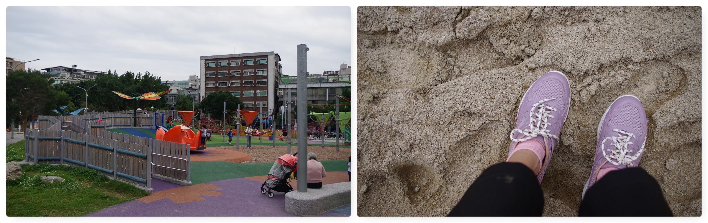在美術園區跟美術館中間有個值得推薦的小封閉空間，緊鄰大馬路，又在城市綠地的中間，只有一條小徑可進入，以植栽做個基本的隔絕，很容易被人忽略的一個中心點。

那就是2017年重建的王大閎建築劇場，由王大閎建築研究與保存學會所策劃的案子，捐贈給台北市後由北美館營運，周二到周日的早上九點半到下午五點半皆有開放參觀，以劇場為名，用生活的模式去融入體會。
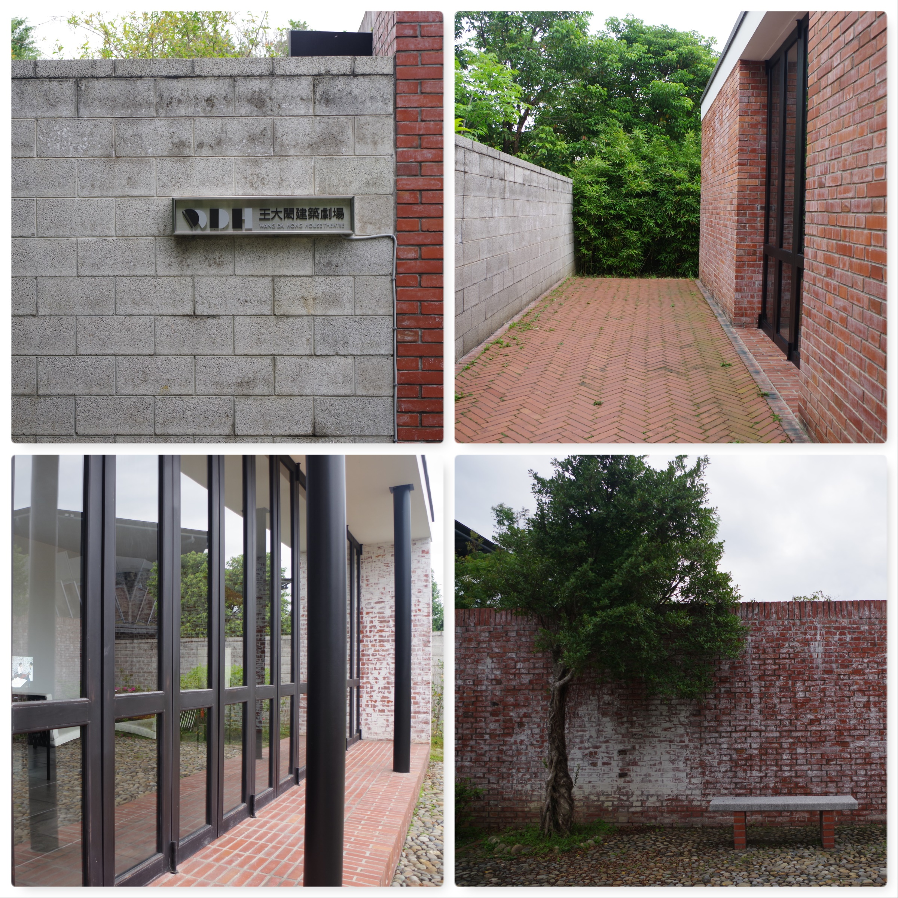小小的房子有強烈的切割，色彩分明的線條與色塊構築起這個中西元素都被強調凸顯的空間，簡潔有力。
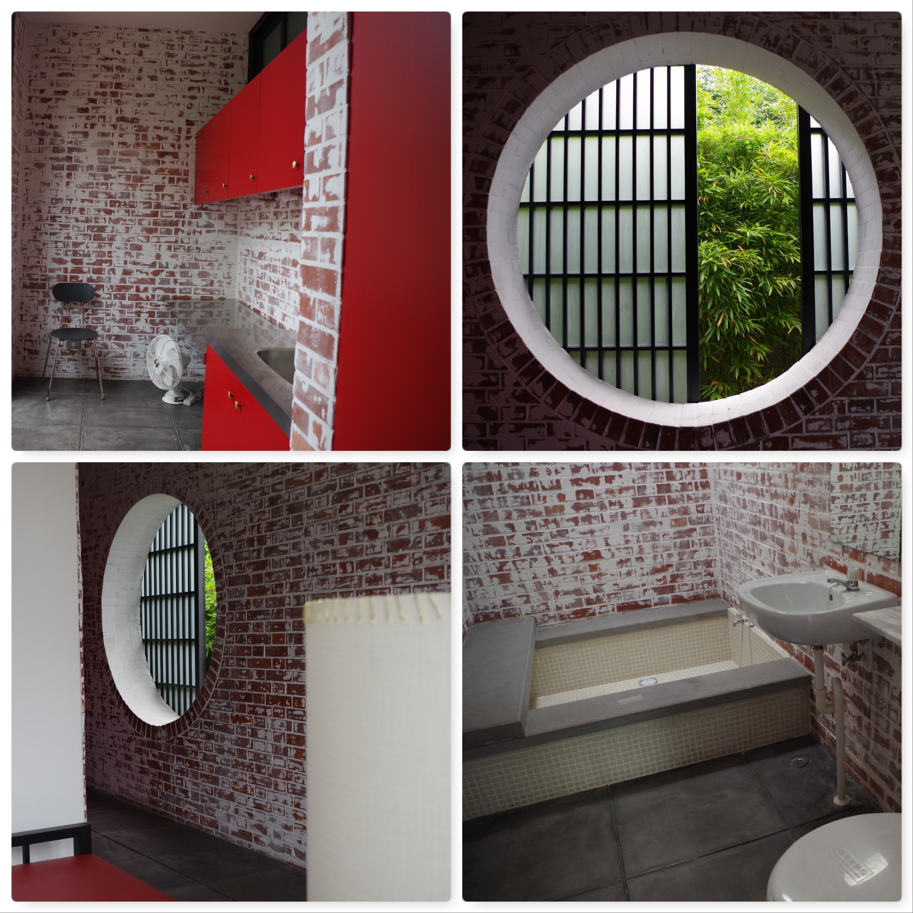王大閎建築劇場的正對面有間使用同一入口的咖啡店，從花博可以看到，卻不容易進到裡面，大片玻璃下通透的視線，有質感的裝潢與寧靜的氛圍，附上大片的書牆若有時間很適合停留放空。
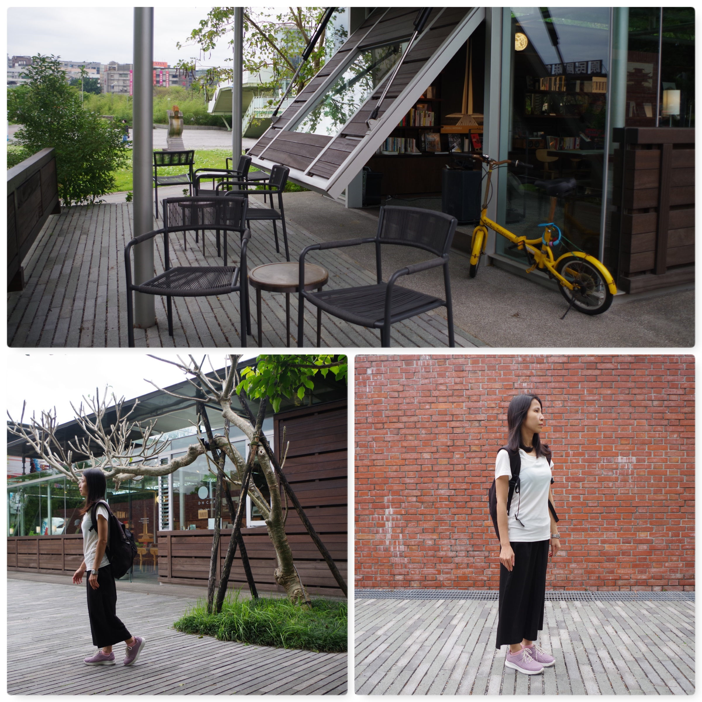習慣讓自己活動滿檔的人則可以選擇進入隔壁的北美館，繼續一段看展之旅，讓一趟行程豐富到不行，包羅萬象，也讓雙腳得到極度充分的活動。

實測感受
這樣一天趴趴走下來鞋底的感覺相當柔軟舒服，初套上鞋的輕盈感可持續一整天。
輕巧無負擔
一開始以為真皮的休閒鞋會有一定的重量，穿上以後卻意外的輕，基於登山者的一個慣性病，立馬拿去秤重，沒想到這樣一雙看起來有質感的真皮厚底鞋只有0.5公斤，完全沒有重量上的負擔。

寬鞋頭大空間
在鞋頭的設計上有針對亞洲人的腳型做比較寬版，試穿時有試過另一款萬步健康閃色布料綁帶休閒鞋就是比較窄版的設計，因為我的腳型較瘦，窄版穿起來是貼合而無不適，這一雙寬版應該能符合多數人的需求。

彈性溫柔護腳底
厚厚的氣墊與奈米鞋墊則提供腳底非常柔軟的保護，腳不太會臭的我對獨家專利的奈米技術沒有特別的感受，但對於鞋墊與鞋底給的彈性超有感，踩起來有點像是高島縱走時那浮動的地面，自然中樹根土壤所形成踩踏時會上下起伏的地面，讓人忍不住想多踩幾步，我想這也是他命名為萬步健康鞋的原因之一吧。
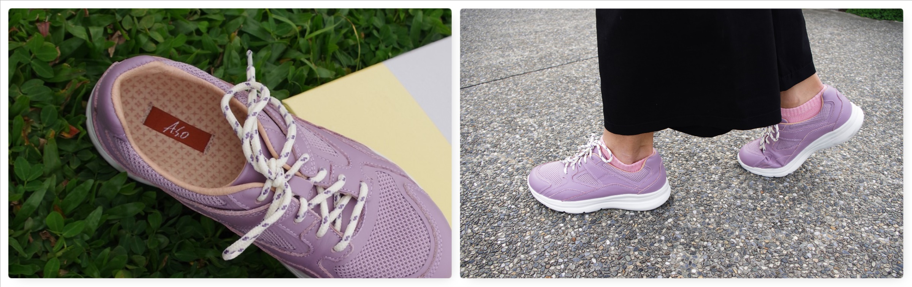網布透氣不悶熱
除了內部的科技，外表也加了網布材質增加透氣度，行走過程腳是很清爽的，鞋帶的材質也不易鬆脫，不用走走停停為了綁掉落的鞋帶。唯獨穿慣運動鞋，鞋舌附近與腳接觸的地方因為是皮的材質感覺比較硬一些，推測是新鞋加上穿著習慣引起的感受。

身呼吸不著涼
排汗衣的部分因為選了白色，在某些情況下會覺得比較透一點，會在意的人可能要選擇其他的色彩或是多注意自己的內在穿著。實測日是20度上下多雲的天氣，只有在騎車的時候及傍晚要離開前加上外套，過程中覺得舒爽，好像風吹不進去但又透氣。
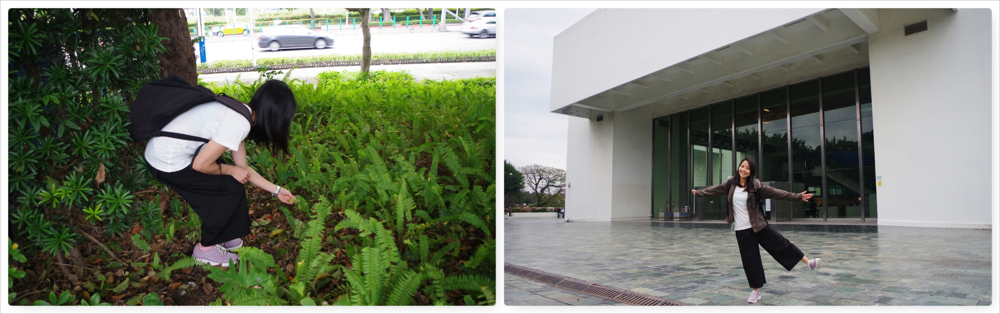除臭抑菌健康來
而其主打的負離子除臭、酸鹼平衡、抑菌等功能一般的健走行程對很少流汗的我來說有點難測，所以加碼踩登山機及高強度肌力訓練，目前為止衣服都還是無異味。

柔軟親膚負離子
拿到衣服的第一個觸感就是布料傳達而來的細緻輕柔，究竟有多軟呢? 就是那種拿出來試穿後無法摺好筆挺放回包裝的那種軟，像流動的水，但很神奇地穿起來卻不會有塌塌的感覺，適度的貼合身軀。雖然整件都是白色，衣服上可以看到水平的紋路，在腋下的部分也能清楚看到不同布料的設計，細節上花費不少心力，對這樣一件排汗衣試穿後的感想除了舒服，還是詞窮的舒服，雖然無法對高科技的技術給予專業審視，但很喜歡他的質感。
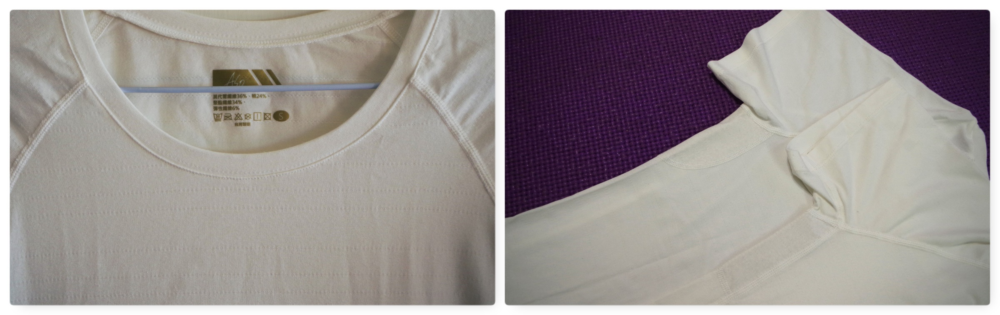沒想到看著家人會購買的品牌有機會親自去細細體驗，也見識到他技術與設計上不斷的進步，有一種親切窩心的感覺。